%load_ext autoreload
%autoreload 2NN Prediction Model
1. Big Picture and Objectives
Objective
By June 2026 (end of the Premier League season), develop and evaluate a feedforward (Sequential) neural network that predicts Premier League match outcomes (home win, draw, away win) using historical FBref data scraped from FBref, achieving a Macro F1-score of at least 0.70 on a held-out test season, while applying the concepts learned in the ‘Neural Networks and Deep Learning’ course by deeplearning.ai (forward/backward propagation, gradient descent, regularization, and hyperparameter tuning).
Why Macro F1 over Accuracy? The dataset is imbalanced (Home Win ~45%, Away Win ~30%, Draw ~25%). A naive model predicting “Home Win” always achieves ~45% accuracy without learning anything. Macro F1 weights all three classes equally, ensuring the model genuinely learns to predict draws and away wins — not just the dominant class.
Similar Projects
The next are good examples of similar projects that have applied neural networks and machine learning techniques to predict football match outcomes:
- lorenzopalaia/Football-Prediction (Palaia, 2024): Keras NN on historical data; full notebooks for prep/training/eval.
- giovannicampa/football_match_results_prediction (Campa, 2019): MLP/TensorFlow predict goals/outcomes; 55–59% accuracy.
- AndrewCarterUK/football-predictor (Carter, 2018): Deep NN for Premier League using team stats.
- yuliang419/football-predictor (Yuliang, 2022): Simple NN for EPL from recent performance.
Potential Pipeline
Get data (FBref historical match data) → Preprocess (clean, feature engineering) → Train/Test split → Build NN model (Keras Sequential) → Train (forward/backward prop, gradient descent) → Evaluate (Macro F1-score on test set) → Hyperparameter tuning → Final evaluation.
2. Get the Data
import sys
from pathlib import Path
project_root = Path.cwd().resolve()
while (
project_root.name != "football-match-prediction-nn"
and project_root != project_root.parent
):
project_root = project_root.parent
if str(project_root) not in sys.path:
sys.path.insert(0, str(project_root))# read all csv files and add season from file names like fixtures_2015-2016.csv
import re
from pathlib import Path
import pandas as pd
cwd = Path.cwd()
path = cwd / "src" / "data"
if not path.exists():
path = cwd.parent / "data"
if not path.exists():
raise FileNotFoundError(f"Could not find data directory from {cwd}")
frames = []
for file in sorted(path.glob("*.csv")):
season_match = re.search(r"fixtures_(\d{4}-\d{4})$", file.stem)
season = season_match.group(1) if season_match else None
temp_df = pd.read_csv(file)
temp_df["season"] = season
frames.append(temp_df)
df = pd.concat(frames, ignore_index=True) if frames else pd.DataFrame()
cols_to_check = df.columns.difference(["season"])
df = df.dropna(how="all", subset=cols_to_check)
df| week | day | date | time | home | score | away | attendance | venue | referee | match_report | season | |
|---|---|---|---|---|---|---|---|---|---|---|---|---|
| 0 | 1.0 | Sat | 2015-08-08 | 12:45(06:45) | Manchester Utd | 1–0 | Tottenham Hotspur | 75261.0 | Old Trafford | Jonathan Moss | https://fbref.com/en/matches/86cdfeba/Manchest... | 2015-2016 |
| 1 | 1.0 | Sat | 2015-08-08 | 15:00(09:00) | Leicester City | 4–2 | Sunderland | 32242.0 | King Power Stadium | Lee Mason | https://fbref.com/en/matches/a6cda14d/Leiceste... | 2015-2016 |
| 2 | 1.0 | Sat | 2015-08-08 | 15:00(09:00) | Bournemouth | 0–1 | Aston Villa | 11155.0 | Vitality Stadium | Mark Clattenburg | https://fbref.com/en/matches/df747efb/Bournemo... | 2015-2016 |
| 3 | 1.0 | Sat | 2015-08-08 | 15:00(09:00) | Everton | 2–2 | Watford | 39063.0 | Goodison Park | Mike Jones | https://fbref.com/en/matches/ac0bb534/Everton-... | 2015-2016 |
| 4 | 1.0 | Sat | 2015-08-08 | 15:00(09:00) | Norwich City | 1–3 | Crystal Palace | 27036.0 | Carrow Road | Simon Hooper | https://fbref.com/en/matches/47257ad7/Norwich-... | 2015-2016 |
| ... | ... | ... | ... | ... | ... | ... | ... | ... | ... | ... | ... | ... |
| 4692 | 38.0 | Sun | 2026-05-24 | 16:00(10:00) | Nottingham | 1–1 | Bournemouth | 30741.0 | The City Ground | Craig Pawson | https://fbref.com/en/matches/7517b26a/Nottingh... | 2025-2026 |
| 4693 | 38.0 | Sun | 2026-05-24 | 16:00(10:00) | Manchester City | 1–2 | Aston Villa | 60332.0 | Etihad Stadium | Andy Madley | https://fbref.com/en/matches/b35e6512/Manchest... | 2025-2026 |
| 4694 | 38.0 | Sun | 2026-05-24 | 16:00(10:00) | Liverpool | 1–1 | Brentford | 60325.0 | Anfield | Darren England | https://fbref.com/en/matches/bd48c230/Liverpoo... | 2025-2026 |
| 4695 | 38.0 | Sun | 2026-05-24 | 16:00(10:00) | Crystal Palace | 1–2 | Arsenal | 25192.0 | Selhurst Park | Farai Hallam | https://fbref.com/en/matches/d0233f18/Crystal-... | 2025-2026 |
| 4696 | 38.0 | Sun | 2026-05-24 | 16:00(10:00) | West Ham | 3–0 | Leeds United | 62471.0 | London Stadium | Anthony Taylor | https://fbref.com/en/matches/df8c12d9/West-Ham... | 2025-2026 |
4180 rows × 12 columns
3. Exploratory Analysis and Insights
df.info()<class 'pandas.DataFrame'>
Index: 4180 entries, 0 to 4696
Data columns (total 12 columns):
# Column Non-Null Count Dtype
--- ------ -------------- -----
0 week 4180 non-null float64
1 day 4180 non-null str
2 date 4180 non-null str
3 time 4180 non-null str
4 home 4180 non-null str
5 score 4180 non-null str
6 away 4180 non-null str
7 attendance 3739 non-null float64
8 venue 4180 non-null str
9 referee 4180 non-null str
10 match_report 4180 non-null str
11 season 4180 non-null str
dtypes: float64(2), str(10)
memory usage: 424.5 KBdf.describe().transpose()| count | mean | std | min | 25% | 50% | 75% | max | |
|---|---|---|---|---|---|---|---|---|
| week | 4180.0 | 19.500000 | 10.967168 | 1.0 | 10.0 | 19.5 | 29.0 | 38.0 |
| attendance | 3739.0 | 38557.486761 | 16815.939992 | 2000.0 | 25573.0 | 32472.0 | 53007.0 | 83222.0 |
import matplotlib.pyplot as plt
# Null values count
null_counts = df.isnull().sum().sort_values(ascending=True).where(lambda x: x > 0).dropna()
fig, ax = plt.subplots(figsize=(10, 5))
bars = null_counts.plot(kind="barh", ax=ax)
ax.set_title("Null Values Count \n", fontsize=14, pad=10, loc="left")
# Remove unnecessary clutter
ax.spines["top"].set_visible(False)
ax.spines["right"].set_visible(False)
# Optional: remove left spine for cleaner look
# ax.spines["left"].set_visible(False)
for bar in ax.patches:
value = int(bar.get_width())
if value > 0:
ax.text(
value, # x position: end of the bar
bar.get_y() + bar.get_height() / 2, # y position: middle of the bar
f" {value:,}", # text
ha="left", # horizontal alignment
va="center", # vertical alignment
fontsize=9,
)
# ax.set_ylabel("Count")
ax.set_xlabel("Number of Missing Values", loc="left")
plt.tight_layout()
plt.show()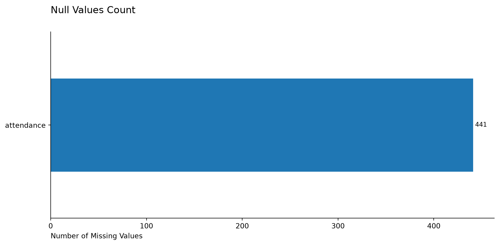
# Count of rows with all null values
int(df.isnull().all(axis=1).sum())0import matplotlib.pyplot as plt
fig, (ax1, ax2) = plt.subplots(2, 1, figsize=(12, 15))
# Remove unnecessary clutter
ax1.spines["top"].set_visible(False)
ax1.spines["right"].set_visible(False)
ax2.spines["top"].set_visible(False)
ax2.spines["right"].set_visible(False)
df["home"].groupby(
df["home"]
).count(
).sort_values(
ascending=True
).plot(
kind="barh", ax=ax1
)
ax1.set_title("Home matches per team", fontsize=14, pad=10, loc="left")
ax1.set_ylabel("")
df["away"].groupby(
df["away"]
).count(
).sort_values(
ascending=True
).plot(
kind="barh", ax=ax2
)
ax2.set_title("Away matches per team", fontsize=14, pad=10, loc="left")
ax2.set_ylabel("")
plt.tight_layout()
plt.show()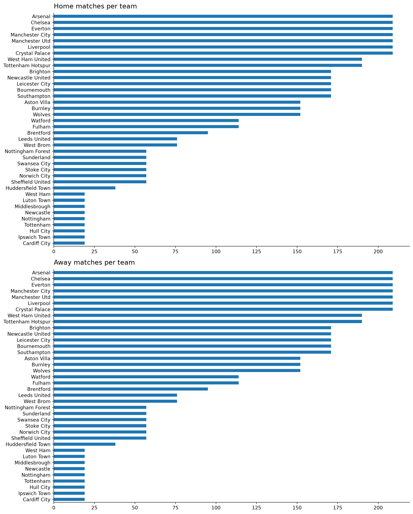
# Remove unnecessary clutter
ax1.spines["top"].set_visible(False)
ax1.spines["right"].set_visible(False)
ax2.spines["top"].set_visible(False)
ax2.spines["right"].set_visible(False)
ax = df["venue"].groupby(
df["venue"]).count().sort_values(
ascending=True
).plot(
kind="barh", figsize=(14, 10)
)
ax.set_title("Matches per venue", fontsize=14, pad=10, loc="left")
ax.set_ylabel("")
ax.spines["top"].set_visible(False)
ax.spines["right"].set_visible(False)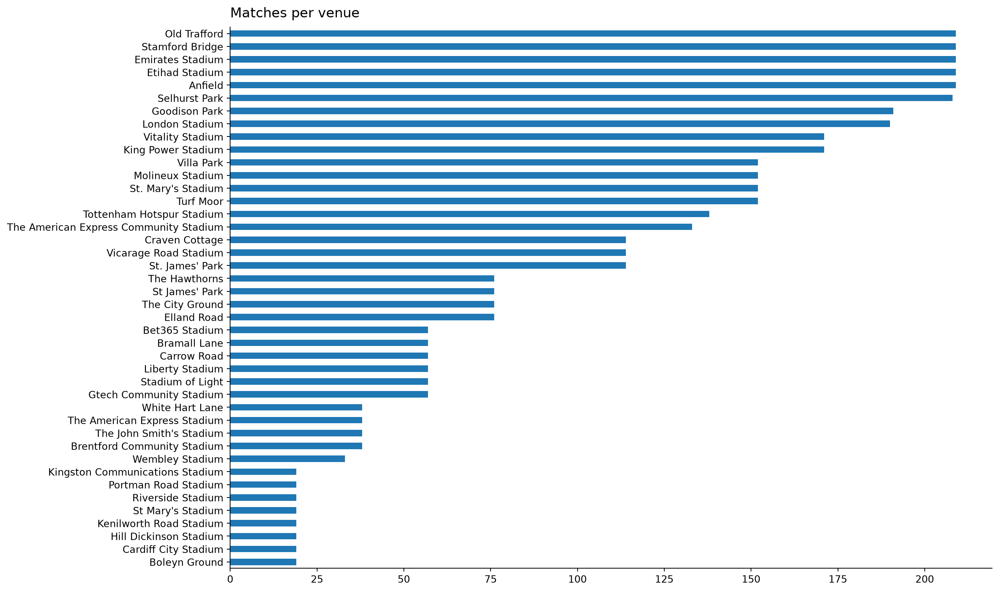
ax = df["referee"].groupby(
df["referee"]).count().sort_values(
ascending=True
).plot(
kind="barh", figsize=(14, 10)
)
ax.set_title("Matches per referee", fontsize=14, pad=10, loc="left")
ax.spines["top"].set_visible(False)
ax.spines["right"].set_visible(False)
ax.set_xlabel("Number of matches", loc="left")
ax.set_ylabel("");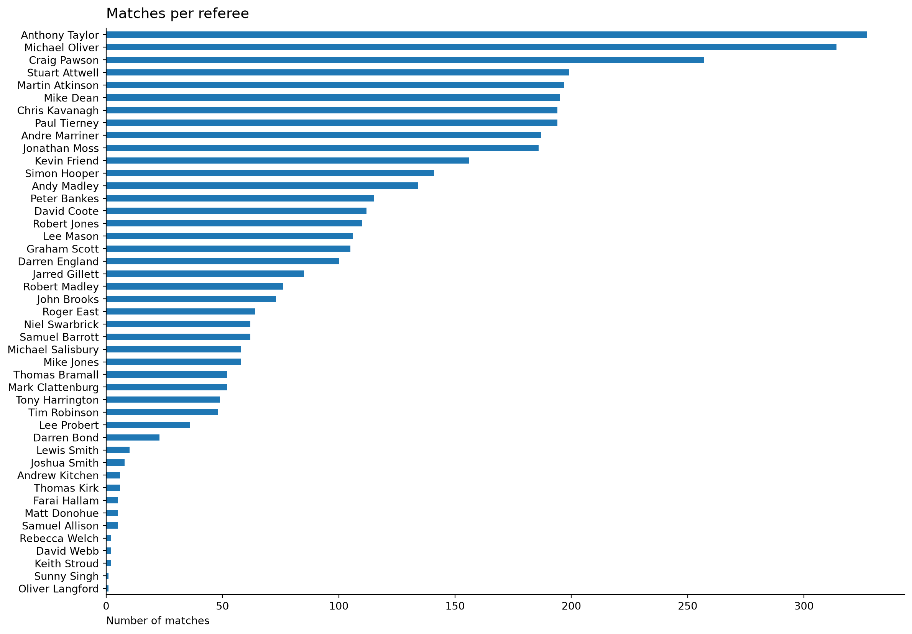
ax = df["day"].groupby(
df["day"]).count().sort_values(
ascending=True
).plot(
kind="barh", figsize=(12, 5)
);
ax.set_title("Matches per day", fontsize=14, pad=10, loc="left")
ax.set_ylabel("")
ax.spines["top"].set_visible(False)
ax.spines["right"].set_visible(False)
# ax.set_xlabel("Day")
# ax.set_ylabel("Number of matches")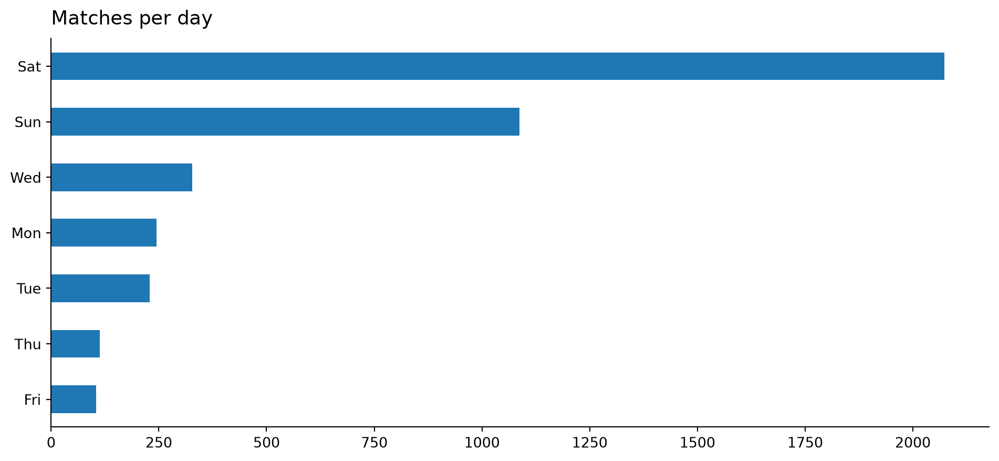
local_hour = pd.to_numeric(
df["time"].str[:2], errors="coerce"
).dropna().astype(int)
ax = local_hour.groupby(local_hour).count().sort_values(
ascending=True
).plot(
kind="barh", figsize=(12, 5)
)
ax.set_title("Matches per local hour", fontsize=14, pad=10, loc="left")
ax.set_ylabel("Hour of day", loc="top")
ax.spines["top"].set_visible(False)
ax.spines["right"].set_visible(False)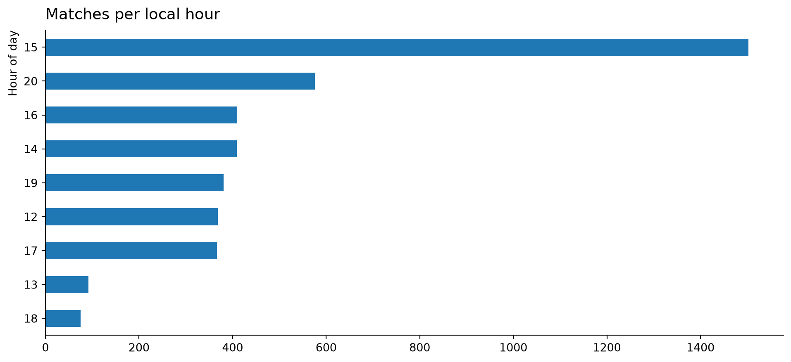
ax = local_hour.plot(kind="hist", bins=5, figsize=(12, 5))
ax.set_title("Local hour distribution", fontsize=14, pad=15, loc="left")
ax.set_ylabel("Frequency", loc="top")
ax.spines["top"].set_visible(False)
ax.spines["right"].set_visible(False)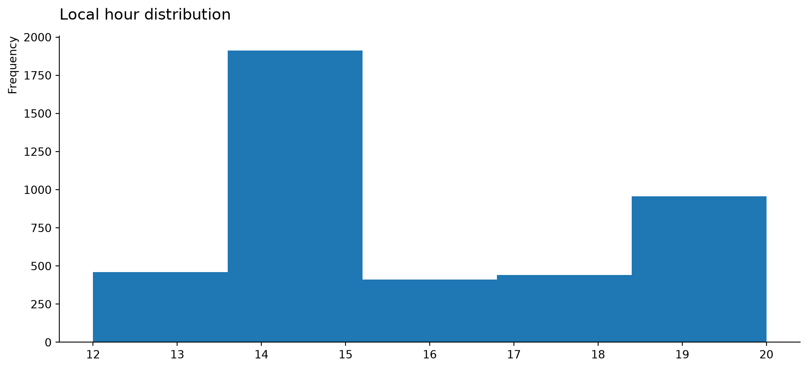
ax = df["attendance"].plot(kind="hist", bins=10, figsize=(12, 5))
ax.set_title("Attendance distribution", fontsize=14, pad=15, loc="left")
ax.set_ylabel("Frequency", loc="top")
ax.spines["top"].set_visible(False)
ax.spines["right"].set_visible(False)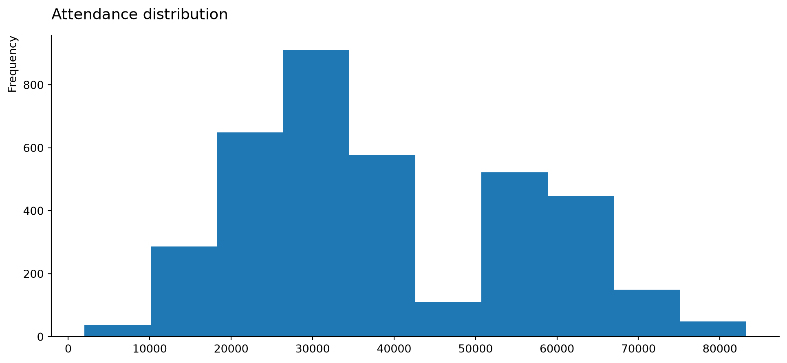
df_eda = df.copy()df_eda| week | day | date | time | home | score | away | attendance | venue | referee | match_report | season | |
|---|---|---|---|---|---|---|---|---|---|---|---|---|
| 0 | 1.0 | Sat | 2015-08-08 | 12:45(06:45) | Manchester Utd | 1–0 | Tottenham Hotspur | 75261.0 | Old Trafford | Jonathan Moss | https://fbref.com/en/matches/86cdfeba/Manchest... | 2015-2016 |
| 1 | 1.0 | Sat | 2015-08-08 | 15:00(09:00) | Leicester City | 4–2 | Sunderland | 32242.0 | King Power Stadium | Lee Mason | https://fbref.com/en/matches/a6cda14d/Leiceste... | 2015-2016 |
| 2 | 1.0 | Sat | 2015-08-08 | 15:00(09:00) | Bournemouth | 0–1 | Aston Villa | 11155.0 | Vitality Stadium | Mark Clattenburg | https://fbref.com/en/matches/df747efb/Bournemo... | 2015-2016 |
| 3 | 1.0 | Sat | 2015-08-08 | 15:00(09:00) | Everton | 2–2 | Watford | 39063.0 | Goodison Park | Mike Jones | https://fbref.com/en/matches/ac0bb534/Everton-... | 2015-2016 |
| 4 | 1.0 | Sat | 2015-08-08 | 15:00(09:00) | Norwich City | 1–3 | Crystal Palace | 27036.0 | Carrow Road | Simon Hooper | https://fbref.com/en/matches/47257ad7/Norwich-... | 2015-2016 |
| ... | ... | ... | ... | ... | ... | ... | ... | ... | ... | ... | ... | ... |
| 4692 | 38.0 | Sun | 2026-05-24 | 16:00(10:00) | Nottingham | 1–1 | Bournemouth | 30741.0 | The City Ground | Craig Pawson | https://fbref.com/en/matches/7517b26a/Nottingh... | 2025-2026 |
| 4693 | 38.0 | Sun | 2026-05-24 | 16:00(10:00) | Manchester City | 1–2 | Aston Villa | 60332.0 | Etihad Stadium | Andy Madley | https://fbref.com/en/matches/b35e6512/Manchest... | 2025-2026 |
| 4694 | 38.0 | Sun | 2026-05-24 | 16:00(10:00) | Liverpool | 1–1 | Brentford | 60325.0 | Anfield | Darren England | https://fbref.com/en/matches/bd48c230/Liverpoo... | 2025-2026 |
| 4695 | 38.0 | Sun | 2026-05-24 | 16:00(10:00) | Crystal Palace | 1–2 | Arsenal | 25192.0 | Selhurst Park | Farai Hallam | https://fbref.com/en/matches/d0233f18/Crystal-... | 2025-2026 |
| 4696 | 38.0 | Sun | 2026-05-24 | 16:00(10:00) | West Ham | 3–0 | Leeds United | 62471.0 | London Stadium | Anthony Taylor | https://fbref.com/en/matches/df8c12d9/West-Ham... | 2025-2026 |
4180 rows × 12 columns
df_eda["weekday"] = pd.to_datetime(
df_eda["date"], errors="coerce"
).dt.weekday + 1
df_eda["month"] = pd.to_datetime(
df_eda["date"], errors="coerce"
).dt.month
df_eda["hour"] = pd.to_numeric(
df_eda["time"].str[:2], errors="coerce"
).dropna().astype(int)def label_home_outcome(score):
if pd.isna(score):
return None
try:
home_score, away_score = map(int, score.split("–"))
if home_score > away_score:
return 1
elif home_score < away_score:
return -1
else:
return 0
except Exception as e:
print(f"Error encoding score '{score}': {e}")
return None
df_eda["home_outcome"] = df_eda["score"].apply(label_home_outcome)import numpy as np
import seaborn as sns
corr_matrix = df_eda.corr(numeric_only=True)
# Sort by absolute correlation with home_outcome
target = "home_outcome"
corr_with_target = corr_matrix[target].drop(
target
).sort_values(key=abs, ascending=True)
fig, axes = plt.subplots(2, 1, figsize=(15, 20))
# Bar chart: correlation of each feature with home_outcome
colors = ["#d73027" if v < 0 else "#4575b4" for v in corr_with_target]
corr_with_target.plot(kind="barh", ax=axes[0], color=colors)
# Keep x-axis centered at zero with symmetric limits
max_abs = corr_with_target.abs().max()
x_pad = max_abs * 0.15 if max_abs > 0 else 0.1
axes[0].set_xlim(-(max_abs + x_pad), max_abs + x_pad)
# Add value labels at the end of each bar
offset = (max_abs + x_pad) * 0.02
for patch, value in zip(axes[0].patches, corr_with_target.values):
y = patch.get_y() + patch.get_height() / 2
if value >= 0:
axes[0].text(
value + offset,
y,
f"{value:.3f}",
va="center",
ha="left",
fontsize=9
)
else:
axes[0].text(
value - offset,
y,
f"{value:.3f}",
va="center",
ha="right",
fontsize=9
)
axes[0].set_title(
f"Feature Correlation with {target}", fontsize=13, pad=10, loc="left")
axes[0].set_xlabel("Pearson r", loc="left")
axes[0].axvline(0, color="black", linewidth=0.8)
axes[0].spines["top"].set_visible(False)
axes[0].spines["right"].set_visible(False)
# Heatmap: lower triangle only (includes diagonal)
# mask = np.triu(np.ones_like(corr_matrix, dtype=bool))
sns.heatmap(corr_matrix, annot=True, fmt=".2f", cmap="Blues", center=0,
linewidths=0.0, ax=axes[1], vmin=-1, vmax=1)
axes[1].set_title("Full Correlation Heatmap", fontsize=13, pad=10, loc="left")
plt.tight_layout()
plt.show()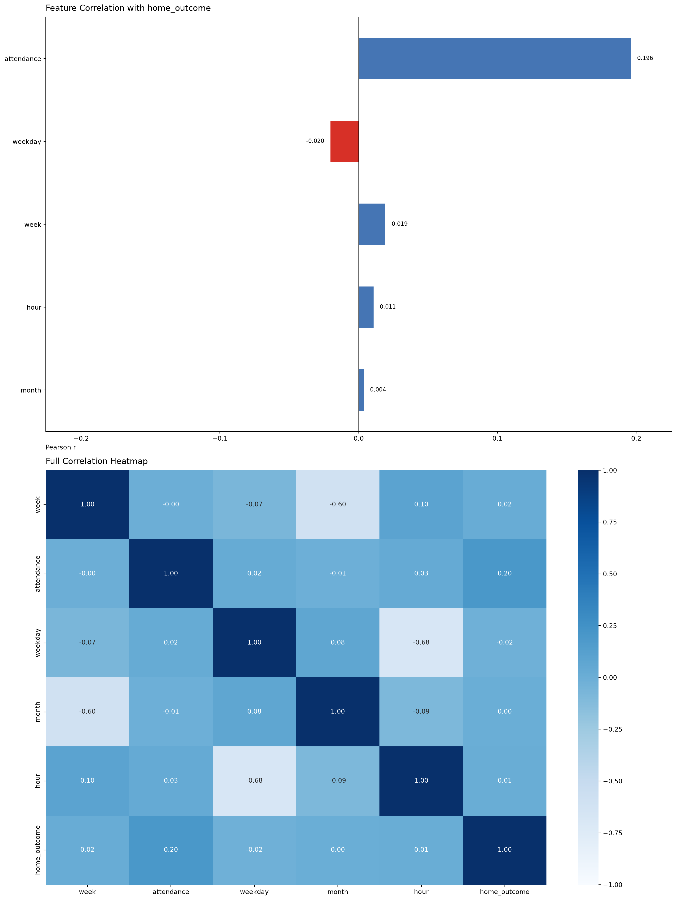
df_eda.head(10)| week | day | date | time | home | score | away | attendance | venue | referee | match_report | season | weekday | month | hour | home_outcome | |
|---|---|---|---|---|---|---|---|---|---|---|---|---|---|---|---|---|
| 0 | 1.0 | Sat | 2015-08-08 | 12:45(06:45) | Manchester Utd | 1–0 | Tottenham Hotspur | 75261.0 | Old Trafford | Jonathan Moss | https://fbref.com/en/matches/86cdfeba/Manchest... | 2015-2016 | 6 | 8 | 12 | 1 |
| 1 | 1.0 | Sat | 2015-08-08 | 15:00(09:00) | Leicester City | 4–2 | Sunderland | 32242.0 | King Power Stadium | Lee Mason | https://fbref.com/en/matches/a6cda14d/Leiceste... | 2015-2016 | 6 | 8 | 15 | 1 |
| 2 | 1.0 | Sat | 2015-08-08 | 15:00(09:00) | Bournemouth | 0–1 | Aston Villa | 11155.0 | Vitality Stadium | Mark Clattenburg | https://fbref.com/en/matches/df747efb/Bournemo... | 2015-2016 | 6 | 8 | 15 | -1 |
| 3 | 1.0 | Sat | 2015-08-08 | 15:00(09:00) | Everton | 2–2 | Watford | 39063.0 | Goodison Park | Mike Jones | https://fbref.com/en/matches/ac0bb534/Everton-... | 2015-2016 | 6 | 8 | 15 | 0 |
| 4 | 1.0 | Sat | 2015-08-08 | 15:00(09:00) | Norwich City | 1–3 | Crystal Palace | 27036.0 | Carrow Road | Simon Hooper | https://fbref.com/en/matches/47257ad7/Norwich-... | 2015-2016 | 6 | 8 | 15 | -1 |
| 5 | 1.0 | Sat | 2015-08-08 | 17:30(11:30) | Chelsea | 2–2 | Swansea City | 41232.0 | Stamford Bridge | Michael Oliver | https://fbref.com/en/matches/f3ff91b0/Chelsea-... | 2015-2016 | 6 | 8 | 17 | 0 |
| 6 | 1.0 | Sun | 2015-08-09 | 13:30(07:30) | Arsenal | 0–2 | West Ham United | 59996.0 | Emirates Stadium | Martin Atkinson | https://fbref.com/en/matches/71fb3701/Arsenal-... | 2015-2016 | 7 | 8 | 13 | -1 |
| 7 | 1.0 | Sun | 2015-08-09 | 13:30(07:30) | Newcastle United | 2–2 | Southampton | 49019.0 | St. James' Park | Craig Pawson | https://fbref.com/en/matches/46264921/Newcastl... | 2015-2016 | 7 | 8 | 13 | 0 |
| 8 | 1.0 | Sun | 2015-08-09 | 16:00(10:00) | Stoke City | 0–1 | Liverpool | 27654.0 | Bet365 Stadium | Anthony Taylor | https://fbref.com/en/matches/2f5966ce/Stoke-Ci... | 2015-2016 | 7 | 8 | 16 | -1 |
| 9 | 1.0 | Mon | 2015-08-10 | 20:00(14:00) | West Brom | 0–3 | Manchester City | 24564.0 | The Hawthorns | Mike Dean | https://fbref.com/en/matches/ea283763/West-Bro... | 2015-2016 | 1 | 8 | 20 | -1 |
df_eda.sort_values("date", inplace=True)def add_venue_form_last_n(
df: pd.DataFrame,
n: int = 5,
outcome_col: str = "home_outcome",
season_col: str = "season",
home_col: str = "home",
away_col: str = "away",
) -> pd.DataFrame:
"""Add venue-specific rolling form columns to *df* and return it.
Columns added:
- home_team_home_matches_form_balance_last_n
- away_team_away_matches_form_balance_last_n
"""
out = df.copy()
out[f"home_team_home_matches_form_balance_last_{n}"] = (
out.groupby([season_col, home_col])[outcome_col]
.transform(lambda s: s.shift(1).rolling(n, min_periods=1).sum())
.fillna(0)
)
out[f"away_team_away_matches_form_balance_last_{n}"] = (
out.groupby([season_col, away_col])[outcome_col]
.transform(lambda s: s.shift(1).rolling(n, min_periods=1).sum())
.fillna(0)
.mul(-1)
)
return out
df_eda = add_venue_form_last_n(df_eda, n=1)
df_eda = add_venue_form_last_n(df_eda, n=3)
df_eda = add_venue_form_last_n(df_eda, n=5)
df_eda = add_venue_form_last_n(df_eda, n=10)df_eda[df_eda["away"] == "Manchester Utd"].head(10)| week | day | date | time | home | score | away | attendance | venue | referee | ... | hour | home_outcome | home_team_home_matches_form_balance_last_1 | away_team_away_matches_form_balance_last_1 | home_team_home_matches_form_balance_last_3 | away_team_away_matches_form_balance_last_3 | home_team_home_matches_form_balance_last_5 | away_team_away_matches_form_balance_last_5 | home_team_home_matches_form_balance_last_10 | away_team_away_matches_form_balance_last_10 | |
|---|---|---|---|---|---|---|---|---|---|---|---|---|---|---|---|---|---|---|---|---|---|
| 11 | 2.0 | Fri | 2015-08-14 | 19:45(13:45) | Aston Villa | 0–1 | Manchester Utd | 42200.0 | Villa Park | Mike Dean | ... | 19 | -1 | 0.0 | -0.0 | 0.0 | -0.0 | 0.0 | -0.0 | 0.0 | -0.0 |
| 42 | 4.0 | Sun | 2015-08-30 | 16:00(10:00) | Swansea City | 2–1 | Manchester Utd | 20828.0 | Liberty Stadium | Martin Atkinson | ... | 16 | 1 | 1.0 | 1.0 | 1.0 | 1.0 | 1.0 | 1.0 | 1.0 | 1.0 |
| 63 | 6.0 | Sun | 2015-09-20 | 16:00(10:00) | Southampton | 2–3 | Manchester Utd | 31588.0 | St. Mary's Stadium | Mark Clattenburg | ... | 16 | -1 | 1.0 | -1.0 | 0.0 | -0.0 | 0.0 | -0.0 | 0.0 | -0.0 |
| 85 | 8.0 | Sun | 2015-10-04 | 16:00(10:00) | Arsenal | 3–0 | Manchester Utd | 60084.0 | Emirates Stadium | Anthony Taylor | ... | 16 | 1 | 1.0 | 1.0 | 0.0 | 1.0 | 0.0 | 1.0 | 0.0 | 1.0 |
| 89 | 9.0 | Sat | 2015-10-17 | 15:00(09:00) | Everton | 0–3 | Manchester Utd | 39553.0 | Goodison Park | Jonathan Moss | ... | 15 | -1 | 0.0 | -1.0 | 0.0 | -1.0 | 0.0 | -0.0 | 0.0 | -0.0 |
| 111 | 11.0 | Sat | 2015-10-31 | 15:00(10:00) | Crystal Palace | 0–0 | Manchester Utd | 24854.0 | Selhurst Park | Mike Jones | ... | 15 | 0 | -1.0 | 1.0 | -1.0 | 1.0 | -1.0 | 1.0 | -1.0 | 1.0 |
| 132 | 13.0 | Sat | 2015-11-21 | 12:45(07:45) | Watford | 1–2 | Manchester Utd | 20702.0 | Vicarage Road Stadium | Robert Madley | ... | 12 | -1 | 1.0 | -0.0 | -1.0 | -0.0 | 0.0 | -0.0 | 0.0 | 1.0 |
| 148 | 14.0 | Sat | 2015-11-28 | 17:30(12:30) | Leicester City | 1–1 | Manchester Utd | 32115.0 | King Power Stadium | Craig Pawson | ... | 17 | 0 | 1.0 | 1.0 | 1.0 | 2.0 | 2.0 | 2.0 | 3.0 | 2.0 |
| 170 | 16.0 | Sat | 2015-12-12 | 17:30(12:30) | Bournemouth | 2–1 | Manchester Utd | 11334.0 | Vitality Stadium | Anthony Taylor | ... | 17 | 1 | 0.0 | -0.0 | -2.0 | 1.0 | -1.0 | 1.0 | -2.0 | 2.0 |
| 187 | 18.0 | Sat | 2015-12-26 | 12:45(07:45) | Stoke City | 2–0 | Manchester Utd | 27426.0 | Bet365 Stadium | Kevin Friend | ... | 12 | 1 | -1.0 | -1.0 | 1.0 | -0.0 | 1.0 | 1.0 | -1.0 | 1.0 |
10 rows × 24 columns
import seaborn as sns
corr_matrix = df_eda.corr(numeric_only=True)
# Sort by absolute correlation with home_outcome
target = "home_outcome"
corr_with_target = corr_matrix[target].drop(
target
).sort_values(key=abs, ascending=True)
fig, axes = plt.subplots(2, 1, figsize=(15, 20))
axes[0].spines["top"].set_visible(False)
axes[0].spines["right"].set_visible(False)
# Bar chart: correlation of each feature with home_outcome
colors = ["#d73027" if v < 0 else "#4575b4" for v in corr_with_target]
corr_with_target.plot(kind="barh", ax=axes[0], color=colors)
axes[0].set_title(
f"Feature Correlation with {target}", fontsize=13, pad=10, loc="left"
)
axes[0].set_xlabel("Pearson r", loc="left")
axes[0].axvline(0, color="black", linewidth=0.8)
# Add value labels at the end of each bar
max_abs = corr_with_target.abs().max()
x_pad = max_abs * 0.15 if max_abs > 0 else 0.1
offset = (max_abs + x_pad) * 0.02
for patch, value in zip(axes[0].patches, corr_with_target.values):
y = patch.get_y() + patch.get_height() / 2
if value >= 0:
axes[0].text(
value + offset,
y,
f"{value:.3f}",
va="center",
ha="left",
fontsize=9
)
else:
axes[0].text(
value - offset,
y,
f"{value:.3f}",
va="center",
ha="right",
fontsize=9
)
# Heatmap: lower triangle only (includes diagonal)
# mask = np.triu(np.ones_like(corr_matrix, dtype=bool), k=1)
sns.heatmap(corr_matrix, annot=True, fmt=".1f", cmap="Blues", center=0,
linewidths=0.0, ax=axes[1], vmin=-1, vmax=1)
axes[1].set_title("Full Correlation Heatmap", fontsize=13, pad=10, loc="left")
plt.tight_layout()
plt.show()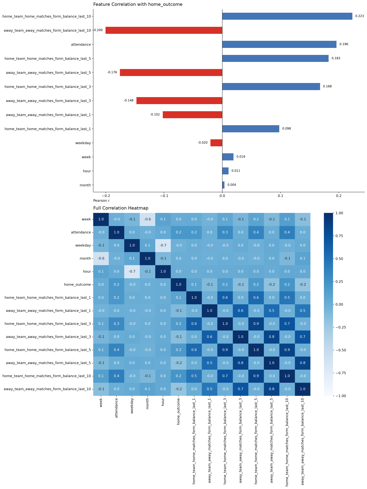
import pandas as pd
def add_team_form_last_n(
df: pd.DataFrame,
n: int = 5,
outcome_col: str = "home_outcome",
season_col: str = "season",
date_col: str = "date",
time_col: str = "time",
home_col: str = "home",
away_col: str = "away",
) -> pd.DataFrame:
out = df.copy()
# Stable match id for merging features back
out["_match_id"] = out.index
# Build sortable kickoff datetime (date + time)
date_part = pd.to_datetime(out[date_col], errors="coerce")
time_part = pd.to_timedelta(
out[time_col].fillna("00:00") + ":00",
errors="coerce",
)
out["_kickoff_dt"] = date_part + time_part.fillna(pd.Timedelta(0))
# Team-centric history table:
# - home team keeps home_outcome
# - away team gets inverse outcome
home_hist_cols = [
"_match_id", season_col, "_kickoff_dt", home_col, outcome_col
]
away_hist_cols = [
"_match_id", season_col, "_kickoff_dt", away_col, outcome_col
]
home_hist = out[home_hist_cols].rename(
columns={home_col: "team", outcome_col: "team_result"}
)
away_hist = out[away_hist_cols].rename(
columns={away_col: "team", outcome_col: "team_result"}
)
away_hist["team_result"] = -away_hist["team_result"]
team_hist = pd.concat([home_hist, away_hist], ignore_index=True)
team_hist = team_hist.sort_values(
[season_col, "team", "_kickoff_dt", "_match_id"]
)
# Overall team form: all venues (home and away matches),
# excluding current match
team_hist[f"overall_form_balance_last_{n}"] = (
team_hist.groupby([season_col, "team"])["team_result"]
.transform(lambda s: s.shift(1).rolling(n, min_periods=1).sum())
.fillna(0)
)
# Merge back: one overall value for home team and one for away team
base_cols = ["_match_id", "team", f"overall_form_balance_last_{n}"]
home_form = team_hist[base_cols].rename(
columns={
"team": home_col,
f"overall_form_balance_last_{n}": f"home_team_overall_form_balance_last_{n}",
}
)
away_form = team_hist[base_cols].rename(
columns={
"team": away_col,
f"overall_form_balance_last_{n}": f"away_team_overall_form_balance_last_{n}",
}
)
out = out.merge(home_form, on=["_match_id", home_col], how="left")
out = out.merge(away_form, on=["_match_id", away_col], how="left")
return out.drop(columns=["_match_id", "_kickoff_dt"])
# Apply
df_eda = add_team_form_last_n(df_eda, n=1)
df_eda = add_team_form_last_n(df_eda, n=3)
df_eda = add_team_form_last_n(df_eda, n=5)
df_eda = add_team_form_last_n(df_eda, n=10)import numpy as np
import seaborn as sns
corr_matrix = df_eda.corr(numeric_only=True)
# Sort by absolute correlation with home_outcome
target = "home_outcome"
corr_with_target = corr_matrix[target].drop(
target
).sort_values(key=abs, ascending=True)
fig, axes = plt.subplots(2, 1, figsize=(15, 20))
axes[0].spines["top"].set_visible(False)
axes[0].spines["right"].set_visible(False)
# Bar chart: correlation of each feature with home_outcome
colors = ["#d73027" if v < 0 else "#4575b4" for v in corr_with_target]
corr_with_target.plot(kind="barh", ax=axes[0], color=colors)
axes[0].set_title(
f"Feature Correlation with {target}", fontsize=13, pad=10, loc="left"
)
axes[0].set_xlabel("Pearson r", loc="left")
axes[0].axvline(0, color="black", linewidth=0.8)
# Add value labels at the end of each bar
max_abs = corr_with_target.abs().max()
x_pad = max_abs * 0.15 if max_abs > 0 else 0
offset = (max_abs + x_pad) * 0.02
for patch, value in zip(axes[0].patches, corr_with_target.values):
y = patch.get_y() + patch.get_height() / 2
if value >= 0:
axes[0].text(
value + offset,
y,
f"{value:.3f}",
va="center",
ha="left",
fontsize=9
)
else:
axes[0].text(
value - offset,
y,
f"{value:.3f}",
va="center",
ha="right",
fontsize=9
)
# Heatmap: lower triangle only (includes diagonal)
# mask = np.triu(np.ones_like(corr_matrix, dtype=bool), k=1)
sns.heatmap(corr_matrix, annot=True, fmt=".1f", cmap="Blues", center=0,
linewidths=0.0, ax=axes[1], vmin=-1, vmax=1)
axes[1].set_title("Full Correlation Heatmap", fontsize=13, pad=10, loc="left")
plt.tight_layout()
plt.show()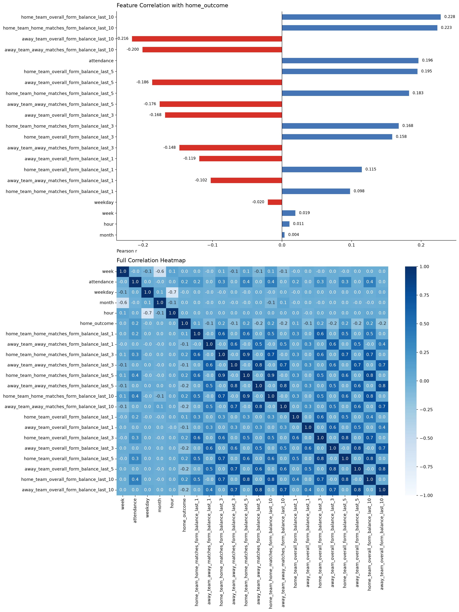
4. Data Preparation Pipeline
def label_home_outcome(score):
if pd.isna(score):
return None
try:
home_score, away_score = map(int, score.split("–"))
if home_score > away_score:
return 1
elif home_score < away_score:
return -1
else:
return 0
except Exception as e:
print(f"Error encoding score '{score}': {e}")
return None
# df["home_outcome"] = df_eda["score"].apply(label_home_outcome)# Define X and y for modeling
df_cleaned = df[df["score"].notna()]
# X = df_cleaned.drop(columns=["score"])
X = df_cleaned
y = df_cleaned["score"].apply(label_home_outcome)df_dates = pd.to_datetime(X["date"], errors="coerce")
chronological_idx = df_dates.sort_values().index
train_frac = 0.97
split_point = int(len(chronological_idx) * train_frac)
train_idx = chronological_idx[:split_point]
test_idx = chronological_idx[split_point:]
X_train, X_test = X.loc[train_idx], X.loc[test_idx]
y_train, y_test = y.loc[train_idx], y.loc[test_idx]
print(
f"Train: {len(X_train)} matches "
f"({df_dates.loc[train_idx].min().date()} -> "
f"{df_dates.loc[train_idx].max().date()})"
)
print(
f"Test: {len(X_test)} matches "
f"({df_dates.loc[test_idx].min().date()} -> "
f"{df_dates.loc[test_idx].max().date()})"
)Train: 4054 matches (2015-08-08 -> 2026-02-10)
Test: 126 matches (2026-02-11 -> 2026-05-24)from sklearn.pipeline import Pipeline
from sklearn.preprocessing import MinMaxScaler, RobustScaler
from src.models.feature_transformer import FeatureTransformer
pipeline = Pipeline([
('feature_engineering', FeatureTransformer()),
("robust", RobustScaler()),
("minmax", MinMaxScaler(clip=True))
# Add other steps like scaling, model, etc. as needed
]).set_output(transform="pandas")
# Fit only on the training split so form/rolling stats and scalers don't leak
# information from the held-out (most recent)
# matches.X_test_transformed = pipeline.transform(X_test)
X_train_transformed = pipeline.fit_transform(X_train)X_train_transformed| week | season | home_team_home_matches_form_balance_last_1 | away_team_away_matches_form_balance_last_1 | home_team_home_matches_form_balance_last_10 | away_team_away_matches_form_balance_last_10 | home_team_home_matches_form_balance_last_3 | away_team_away_matches_form_balance_last_3 | home_team_home_matches_form_balance_last_5 | away_team_away_matches_form_balance_last_5 | ... | away_team_sheffield_united | away_team_southampton | away_team_stoke_city | away_team_sunderland | away_team_swansea_city | away_team_tottenham_hotspur | away_team_watford | away_team_west_brom | away_team_west_ham_united | away_team_wolves | |
|---|---|---|---|---|---|---|---|---|---|---|---|---|---|---|---|---|---|---|---|---|---|
| 0 | 0.000000 | 0.0 | 0.5 | 0.5 | 0.50 | 0.473684 | 0.500000 | 0.500000 | 0.5 | 0.5 | ... | 0.0 | 0.0 | 0.0 | 0.0 | 0.0 | 1.0 | 0.0 | 0.0 | 0.0 | 0.0 |
| 1 | 0.000000 | 0.0 | 0.5 | 0.5 | 0.50 | 0.473684 | 0.500000 | 0.500000 | 0.5 | 0.5 | ... | 0.0 | 0.0 | 0.0 | 1.0 | 0.0 | 0.0 | 0.0 | 0.0 | 0.0 | 0.0 |
| 2 | 0.000000 | 0.0 | 0.5 | 0.5 | 0.50 | 0.473684 | 0.500000 | 0.500000 | 0.5 | 0.5 | ... | 0.0 | 0.0 | 0.0 | 0.0 | 0.0 | 0.0 | 0.0 | 0.0 | 0.0 | 0.0 |
| 3 | 0.000000 | 0.0 | 0.5 | 0.5 | 0.50 | 0.473684 | 0.500000 | 0.500000 | 0.5 | 0.5 | ... | 0.0 | 0.0 | 0.0 | 0.0 | 0.0 | 0.0 | 1.0 | 0.0 | 0.0 | 0.0 |
| 4 | 0.000000 | 0.0 | 0.5 | 0.5 | 0.50 | 0.473684 | 0.500000 | 0.500000 | 0.5 | 0.5 | ... | 0.0 | 0.0 | 0.0 | 0.0 | 0.0 | 0.0 | 0.0 | 0.0 | 0.0 | 0.0 |
| ... | ... | ... | ... | ... | ... | ... | ... | ... | ... | ... | ... | ... | ... | ... | ... | ... | ... | ... | ... | ... | ... |
| 4049 | 0.648649 | 1.0 | 0.5 | 0.5 | 0.65 | 0.421053 | 0.666667 | 0.166667 | 0.6 | 0.3 | ... | 0.0 | 0.0 | 0.0 | 0.0 | 0.0 | 0.0 | 0.0 | 0.0 | 0.0 | 0.0 |
| 4050 | 0.675676 | 1.0 | 0.5 | 1.0 | 0.45 | 0.315789 | 0.333333 | 0.666667 | 0.4 | 0.5 | ... | 0.0 | 0.0 | 0.0 | 0.0 | 0.0 | 0.0 | 0.0 | 0.0 | 0.0 | 0.0 |
| 4051 | 0.675676 | 1.0 | 0.5 | 0.0 | 0.30 | 0.263158 | 0.333333 | 0.500000 | 0.4 | 0.3 | ... | 0.0 | 0.0 | 0.0 | 0.0 | 0.0 | 0.0 | 0.0 | 0.0 | 0.0 | 0.0 |
| 4052 | 0.675676 | 1.0 | 1.0 | 0.5 | 0.60 | 0.263158 | 0.833333 | 0.333333 | 0.7 | 0.4 | ... | 0.0 | 0.0 | 0.0 | 0.0 | 0.0 | 0.0 | 0.0 | 0.0 | 0.0 | 0.0 |
| 4053 | 0.675676 | 1.0 | 1.0 | 1.0 | 0.35 | 0.578947 | 0.500000 | 0.666667 | 0.3 | 0.6 | ... | 0.0 | 0.0 | 0.0 | 0.0 | 0.0 | 0.0 | 0.0 | 0.0 | 0.0 | 0.0 |
4054 rows × 122 columns
5. Model Selection & Training
import torch
print("CUDA available:", torch.cuda.is_available())
print("Torch CUDA build:", torch.version.cuda)CUDA available: True
Torch CUDA build: 11.8